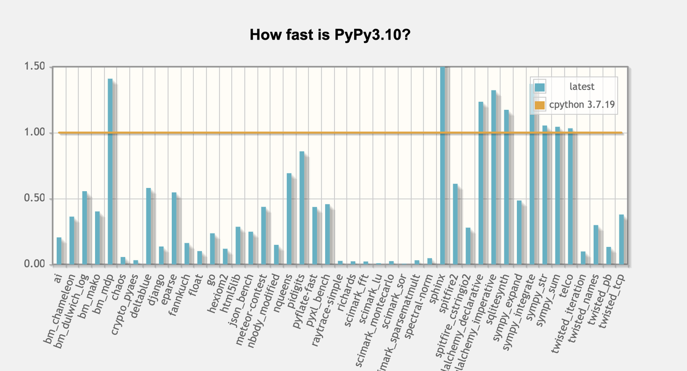

Towards PyPy3.11 - an update
We1 are steadily working towards a Python 3.11 interpreter, which will be part of the upcoming PyPy 7.3.18 release. Along with that, we also recently updated speed.pypy.org to compare PyPy's performance to CPython 3.11 (it used to be CPython 3.7).
Why is there no PyPy for Python 3.11?¶
TL;DR: we are working on it and hopefully will have a beta version soon
We started by merging the exception groups work by Nico Rittinghaus, merging the CPython stdlib for Python 3.11.9, and updating the regex engine to handle atomic groupings. I think these were the largest changes needed to support Python3.11, maybe I missed something else?
We then created a milestone with many of the changes that might not be caught in testing. As of today that milestone stands at 24/40 issues closed, 16 open. This is in addition to the v7.3.18 milestone, which has 11/23 issues closed, 12 open.
We also updated our infrastructure to run nightly buildbot test of the py3.11 branch, including adding py3.11 to our benchmarking site speed.pypy.org.
Then the real work started: fixing these milestone issues and failing stdlib
tests. Some of the changes were cosmetic changes to error messages, some were
more involved changes to the interpreter to behave more like CPython. For instance,
hex(x) where x is an int calls long.format(x, "#x") on CPython where in
PyPy we used x.__format__("#x"). This subtle difference caused a failure in
the repr of IntEnum. Tracking down problems like these takes time. We are
now down to about 250 failing stdlib tests, with thousands passing. For comparison,
PyPy3.10, first released in June 2023, still has around 100 failing stdlib
tests.
C-extension support¶
PyPy supports the Python C-API via a cpyext compatibility layer. We "mangle"
the CPython symbols to add an extra Py to prevent loading CPython c-extension
modules into PyPy, since the ABI is different. So a function like
PyLong_FromLong will be exported from the c shared object as
PyPyLong_FromLong. One of my long-standing goals is to remove this mangling,
but it then requires that our c declarations, inlined functions, and macros in
the headers match 1:1 the CPython headers. We can get by with not declaring and
implementing parts of the interfaces, but what is declared must be identical.
This is a long-term project, with each release the headers get closer to the
CPython versions. I hope to concentrate on the PyUnicode interfaces for this
release.
Note that the time to do this is before a new version release. Once the version is released, we cannot change the headers significantly.
So what is left?¶
Summarizing the milestones and other things to do:
- Update to the recently released 3.11.11 stdlib
- Make sure vmprof works
- Update the
timemodule to use moreMONOTONIC_CLOCK, implementtime.sleepdifferently, and clean up the many duplicatetimelike interfaces we have across the codebase. We have thetimemodule, some time routines in the_threadingmoduleand RPython threading support in therpython/rlib` code. We should also make sure we are using 64-bit time interfaces. - Decide whether zero-cost exceptions gain us in performance and whether we should implement them even if they do not improve performance.
- Update our hpy backend to the latest HEAD, which would allow running the hpy numpy fork
- Reintegrate the pure-python pyrepl libbrary from CPython 3.13.
What else did I forget?
Why did the benchmark results get worse on speed.pypy.org?¶
TL;DR: running a benchmark site is hard. Something changed in the benchmark runner, and suddenly benchmarks got 10-15% slower.
PyPy run an instance of
codepseed with a
very old benchmarking suite
that can still run Python2 (remember: that is the language of
RPython underlying PyPy). The site
runs on PSA infrastructure and the benchmarking machine is generously sponsored
by Baroque Software. On Nov 9, there was a
sudden jump in benchmarking times. For instance
here
is the result for the float benchmark. This happened across various benchmark
runs: both PyPy2.7 and PyPy3.11alpha, with and without the JIT. After spending
some time rerunning various benchmarks, I could only conclude the machine
itself had gotten slower, maybe due to some security update in the linux
kernel, maybe some change in the hosting platform. This "broke" the front-page
comparsison: suddenly "latest" is much slower than the historic benchmarks run
previous to the changes in the machine.
That page also recently (as of last week) uses CPython 3.11 as a baseline for comparison, where previously it used CPython3.7. It is common knowledge that the newer CPython versions are faster, and we see this now quite clearly. Diving into individual benchmarks, we can see that ones where PyPy-with-a-jit was comparable to CPython3.7 seem to be the ones that CPython3.11 improved greatly. Looking at a comparison of the runs this can be seen in benchmarks like deltablue and the sqlalchemy family. So the new graph has more lines that extend past 1.5 than the old graph.
New graph with PyPy3.11
Older graph with PyPy3.10
.
-
These days most of the work is done by CF Bolz-Tereick and me on a volunteer basis. Want to get involved? Reach out, we would love to expand the team. Have an idea for funding the work? Fantastic, let's talk. ↩
Comments